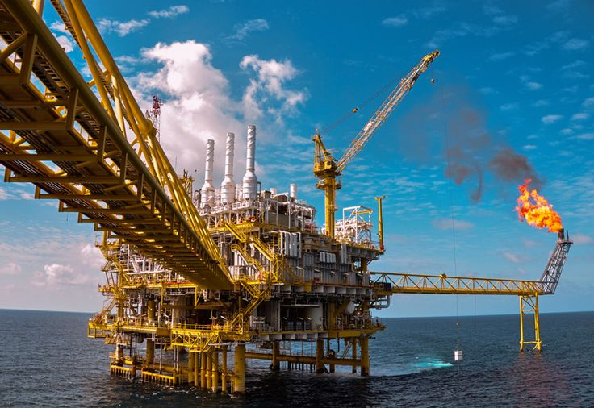

Kontraktor Kontrak Kerja Sama di bawah SKK Migas
Energi dari lepas pantai barat Madura untuk Indonesia
PHE WMO mengelola Blok West Madura Offshore dengan operasi yang aman dan andal sejak 7 Mei 2011, menyalurkan gas ke pelanggan di Jawa Timur dan sekitarnya.
2031kontrak berlaku hingga 6 Mei
0BOPD rata-rata minyak & kondensat (2025)
0MMSCFD rata-rata gas (2025)
0BOPD tambahan dari proyek GEN-MT
0resmi beroperasi sebagai operator
Tentang PHE WMO
PHE WMO adalah anak perusahaan PT Pertamina Hulu Energi dalam Subholding Upstream Pertamina. Wilayah kerja kami berada di lepas pantai barat Madura, Laut Jawa, dengan fasilitas penerima gas di Gresik, Jawa Timur.
Kami menjalankan operasi dengan nilai AKHLAK, prinsip HSSE, dan tata kelola perusahaan yang baik.
Baca profil lengkap


 PROPER Emas
PROPER Emas Penghargaan Subroto
Penghargaan Subroto ISO 50001:2018
ISO 50001:2018 Gold Award ICQCC
Gold Award ICQCCPencapaian ini menunjukkan komitmen dan kapabilitas tim dalam menghadirkan inovasi yang efektif dan berkelanjutan.